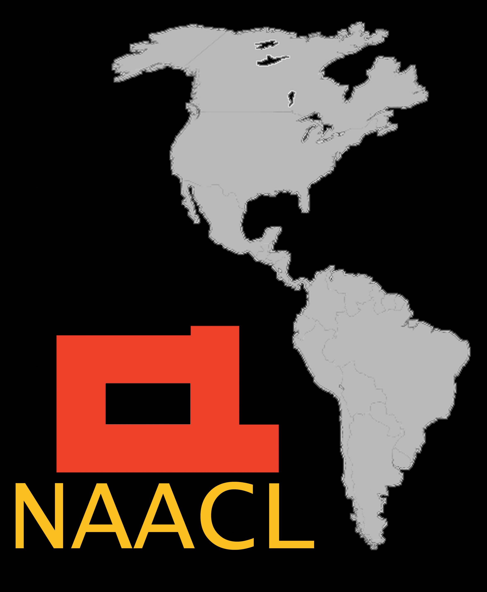
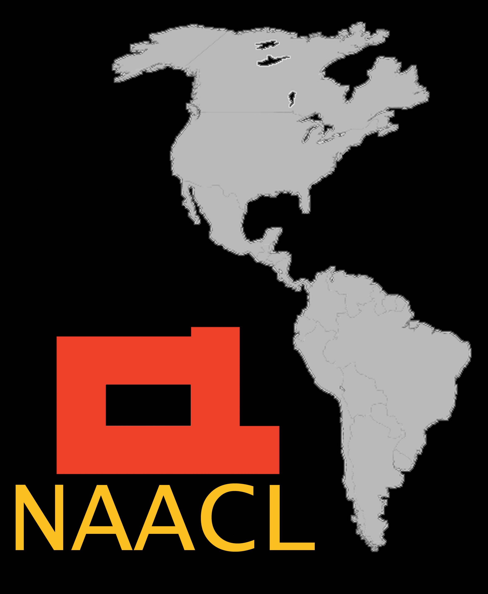

Acerca de ELiC
EliC-11 es la Segunda Escuela de Lingüística Computacional a realizarse en Argentina.
Los objetivos principales de ELiC son:
- Presentar la Lingüística Computacional a estudiantes de la Argentina y del resto de Latinoamérica.
- Servir de punto de encuentro para investigadores de Lingüística Computacional de la región.
- Contribuir a la creación de una comunidad latinoamericana de investigación en el área.
En futuras ediciones, ELiC irá cambiando anualmente su lugar de realización, para incrementar su influencia en la región.
Alcance
- Traducción automática
- Generación automática de resúmenes
- Técnicas de aprendizaje automático (machine learning) para el Procesamiento del Lenguaje Natural (PLN)
- Respuesta automática a preguntas
- Detección de emociones en texto y habla
- Análisis del discurso
- Extracción de información y data mining
- Generación de lenguaje natural
- Semántica (significado) del lenguaje natural
- Sintaxis (estructura) y parsing del lenguaje natural
- Evaluación de herramientas de PLN
- Sistemas de diálogo
- Reconocimiento automático del habla (speech-to-text)
- Síntesis del habla (text-to-speech)
- Prosodia del habla (entonación, ritmo, etc.)
2ndo Workshop Argentino de Procesamiento de Lenguaje Natural
ELiC esta colocada con el 2ndo Workshop Argentino de Procesamiento de Lenguaje Natural. La participación del workshop es tambié gratuita y abierta a todos. El workshop será organizado de 9:30 a 18hs en el Aula 15 de FaMAF.
Becas para estudiantes
Gracias a la ayuda de NAACL ELiC-11 ofrecerá becas para estudiantes que estudien en universidades públicas y residan a más de 100km del lugar de organización de la escuela. Ver el link Becas de Participación para más detalles.
 
